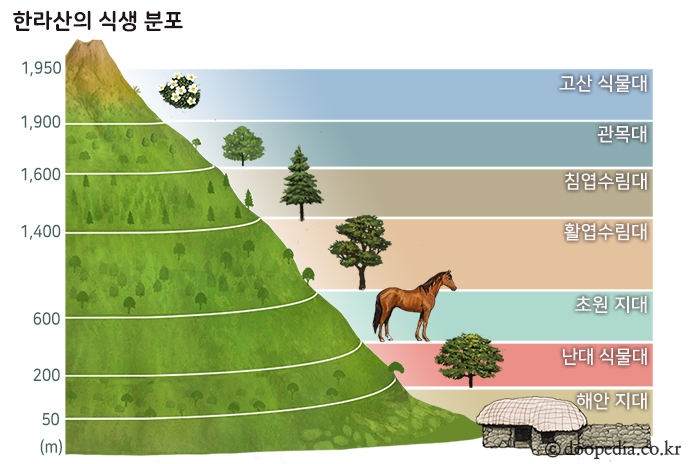

제주도의 화산 활동에 의해 형성된 화산이다. 높이 1,947m로 남한에서 가장 높다.
제주도는 제3기 말∼제4기 초 우리나라의 지각의 역사에서 비교적 최근에 형성된 화산섬으로 수차례의 화산활동에 의해 용암이 분출되며 형성되었다. 한라산은 제주도의 대부분을 차지하고 있으며 제주도 전체가 거대한 한라산의 연속체로 보이기도 한다. 전체적으로 경사가 완만한 순상화산의 형태를 띠고 있으나 정상부에는 경사가 급한 종상화산이 위치하는 이중화산의 형태가 나타난다. 대부분 현무암으로 이루어져 있으며, 제주도 중앙에서 산줄기가 동서로 뻗어 있다. 남쪽은 경사가 심한 반면 북쪽은 완만하고 동서방향으로는 비교적 지대가 높고 평탄하다. 정상에는 둘레 약 3㎞, 지름 500m의 화구호인 백록담(白鹿潭)이 있으며, 주위 사방에 흙붉은오름[土赤岳]·사라오름[砂羅岳]·성널오름[城板岳]·어승생오름[御乘生岳] 등 360여 개의 기생화산을 거느리고 있다. 또 해안지대에는 폭포와 주상절리 등 아름다운 화산지형이 펼쳐지고, 해발고도에 따라 아열대·온대·냉대 등 1,800여 종에 달하는 식물이 자생하여 고도에 따른 식생의 변화가 뚜렷하다. 봄의 철쭉·진달래·유채, 가을의 단풍, 겨울의 설경과 운해가 절경이며, 곳곳에서 한라산의 상징인 노루를 볼 수 있다.
1002년(고려 목종 5)과 1007년에 분화하였다는 기록이 《동국여지승람(東國輿地勝覽)》에 나오는데, 1455년(조선 세조 1)과 1670년(현종 11)에는 지진이 일어나 피해가 컸다는 기록도 있다. 대규모의 폭발의 경우 가장 최근의 흔적은 서귀포시 상창리 인근에 있는 것으로 약 5천 년 전 폭발했던 것으로 추정한다.
1970년 국립공원으로 지정되었고, 해마다 1월 마지막 주에는 어리목을 중심으로 눈꽃축제가 열린다. 동북쪽 기슭에 대한불교조계종 제23교구 본산인 관음사가 있다.
예로부터 부악(釜岳)·원산(圓山)·진산(鎭山)·선산(仙山)·두무악(頭無岳)·영주산(瀛州山)·부라산(浮羅山)·혈망봉(穴望峰)·여장군(女將軍) 등 많은 이름으로 불렸고, 민간 신앙에서는 금강산·지리산과 함께 삼신산(三神山) 가운데 하나로 여겨지기도 한다.
